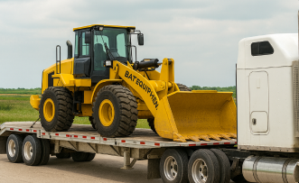
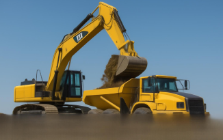
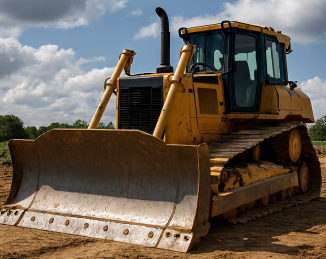

Founded in 1919 in North Carolina between a merger of two tractor companies.

BAT can be found in construction sites all over: Construction sites, logging sites, mines, and other places requiring heavy equipment.

We continue to make affordable but quality equipmenet and encourage social responsibility.